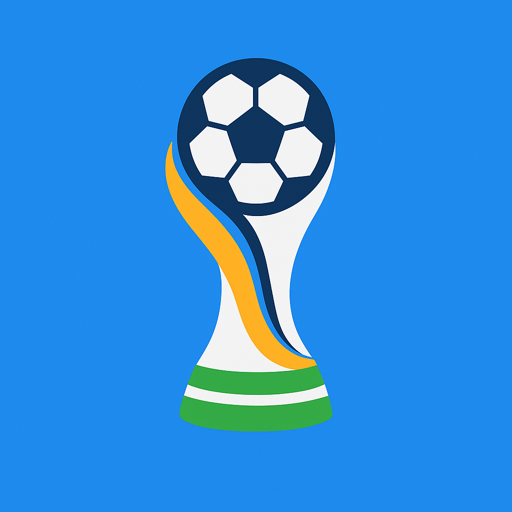
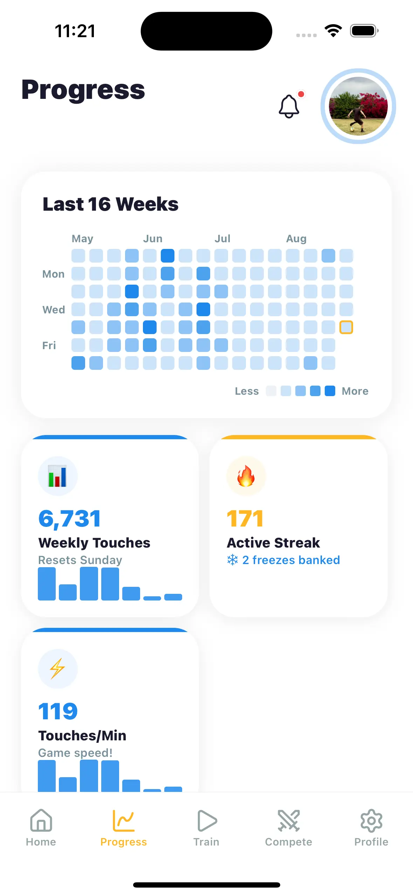

To get better at soccer on your own: set a daily touch goal, train in short dense sessions (10–30 minutes of ball work), track your numbers so you can see progress, and add competition so you have a reason to show up. Skill follows volume; volume follows habit.
The truth about solo training
Almost every standout youth player has the same secret, and it isn’t private coaching. It’s unglamorous daily ball work nobody watches. Team practice teaches you the game; solo training gives you the touch to play it. You control exactly one variable completely: how many times your feet meet the ball this week.
The good news is that solo training is a system, and systems can be copied. This one has four parts.
Part 1: Set a number, not a vibe
“Practice more” fails because it can’t be measured. “1,000 touches before dinner” succeeds because at any moment you either hit it or you didn’t. Pick a daily touch goal that fits your level — the classic benchmark is 1,000 touches a day, roughly 10–15 minutes of fast footwork. Players pushing for the next level go 2,500 and up.
Part 2: Train dense, not long
A great solo session is boring to watch and brutal to do: toe taps, foundations, sole rolls, cone dribbling, wall passes, juggling. Every drill you need fits in a driveway — the full list with instructions is in soccer drills to do at home. Rotate drills so your feet never get comfortable, and finish every session with juggling, the best self-test of touch there is (see how to juggle a soccer ball).
Part 3: Track everything
Tracking sounds like admin. It isn’t — it’s the engine. A player who logs sessions can see their weekly chart climb, watch their daily average rise, and know their best day ever. That feedback loop is what turns “I should practice” into “I’m not losing my streak.” The details of what to count and how are in how to track soccer touches.
Part 4: Add competition
Training alone doesn’t have to mean competing alone. A leaderboard with teammates turns Tuesday footwork into a race for the weekly podium. The kid who’s second by 300 touches on Saturday night suddenly finds 15 more minutes.

Master Touch runs this entire system for you
Set your daily goal and watch the progress ring (Part 1). Use the drill library, daily video challenges, and built-in timer (Part 2). Every session logs to weekly charts, best-day records, daily averages, and a tempo score (Part 3). And the Compete tab ranks you against teammates on touches and juggling — today, this week, and all time (Part 4). Free on the App Store.
Download Free on the App Store
A sample solo week
- Mon–Fri: 10–15 minutes, hit the daily touch goal, complete the daily challenge.
- Saturday: long session — touch goal, cone work with a timer, juggling record attempts.
- Sunday: light day — juggling and free dribbling. The streak survives; the legs recover.
Run that for eight weeks and the difference shows up where it counts: first touch under pressure, in a real game, with nobody reminding you how you got it.